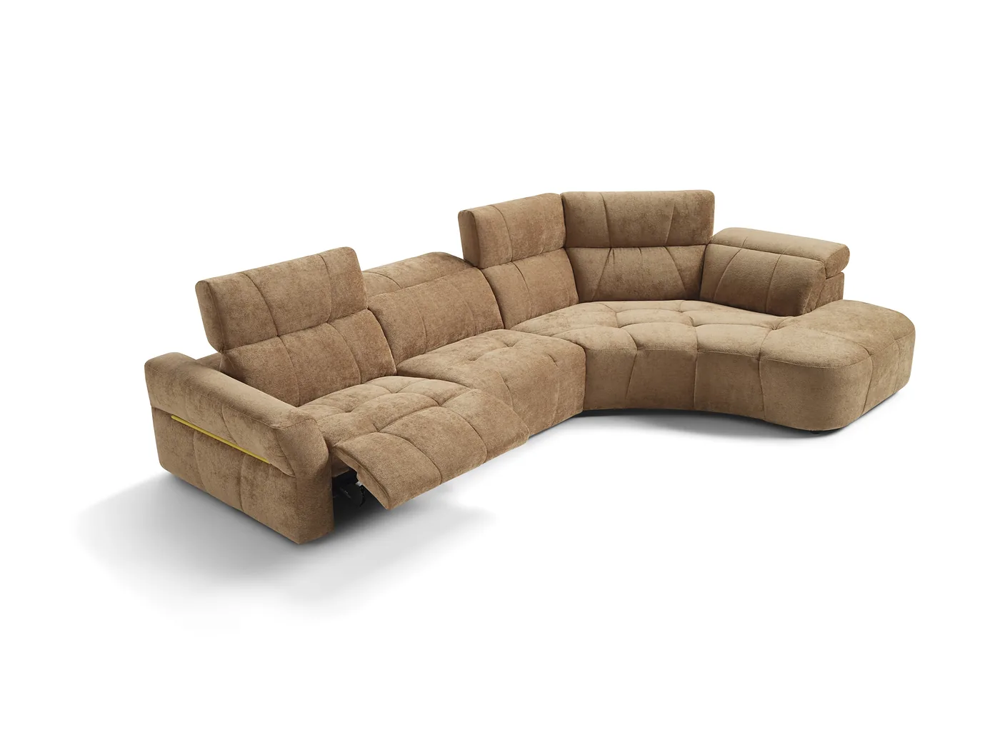
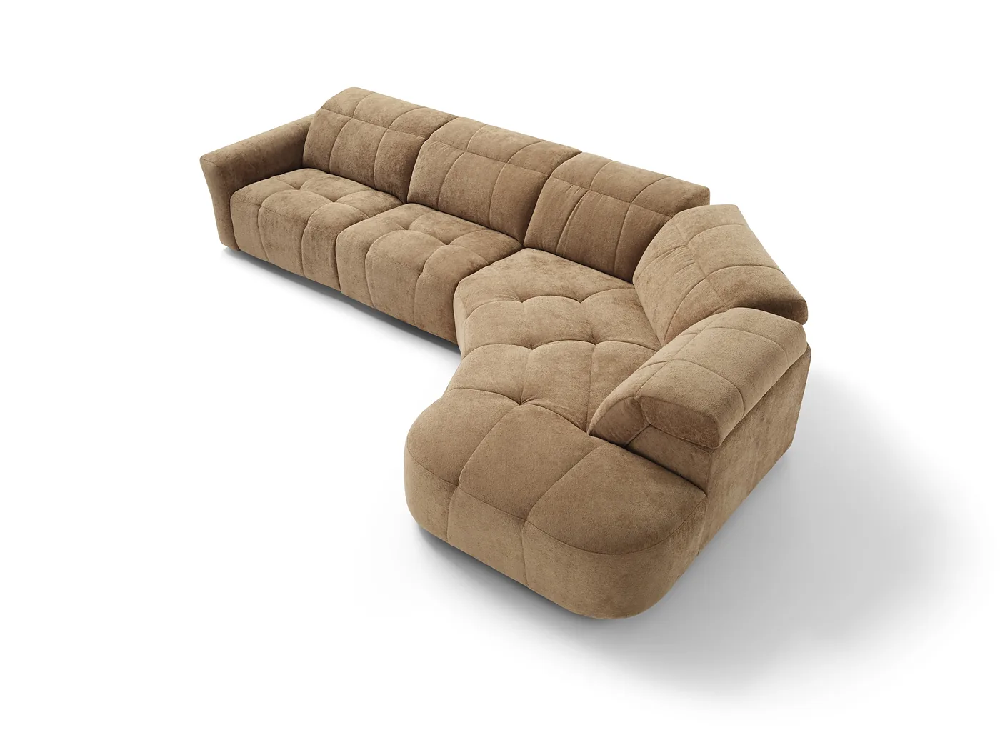
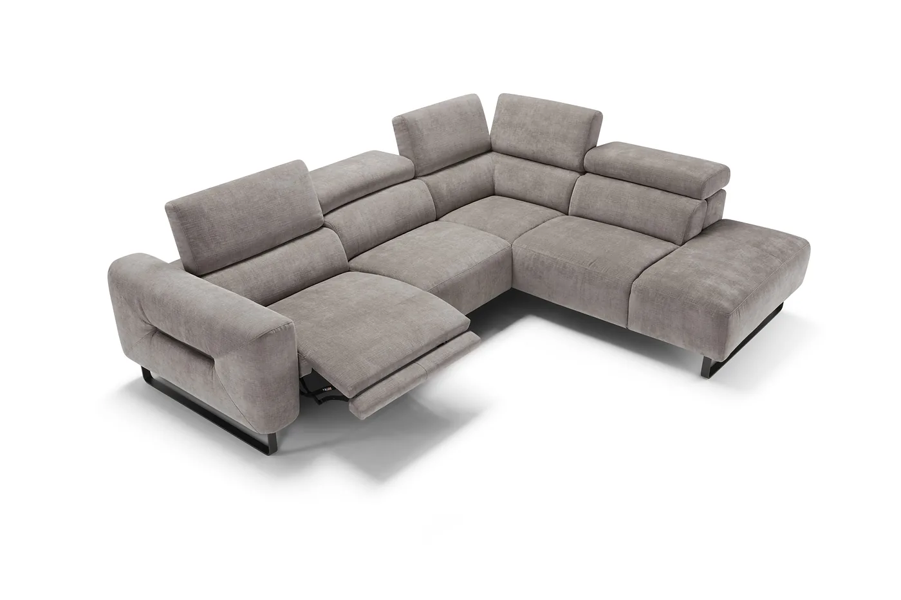
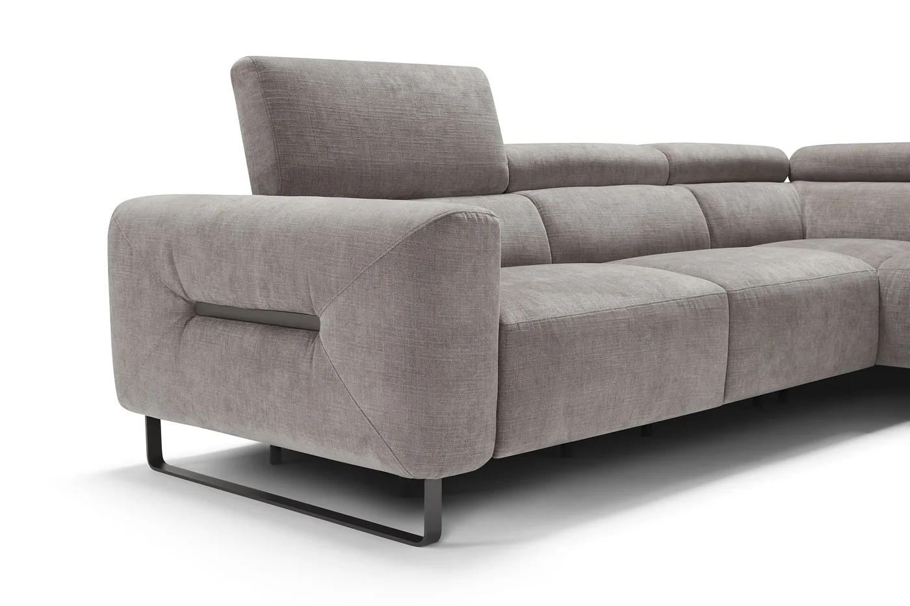
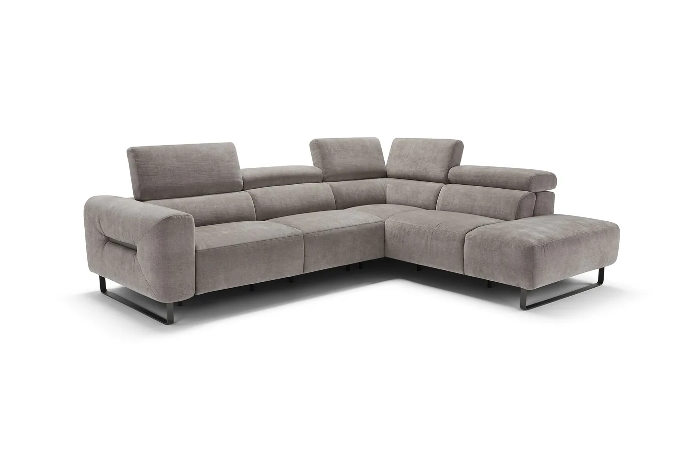
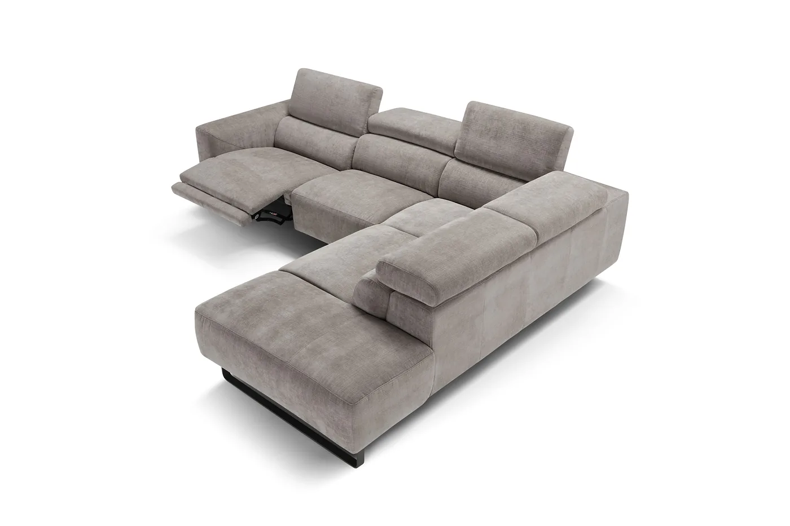
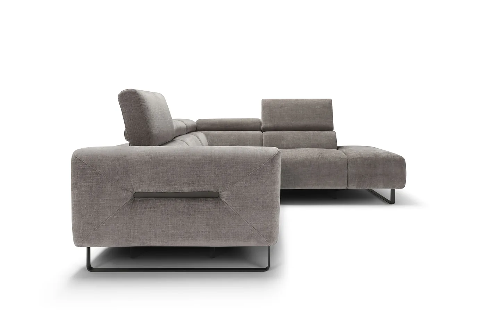
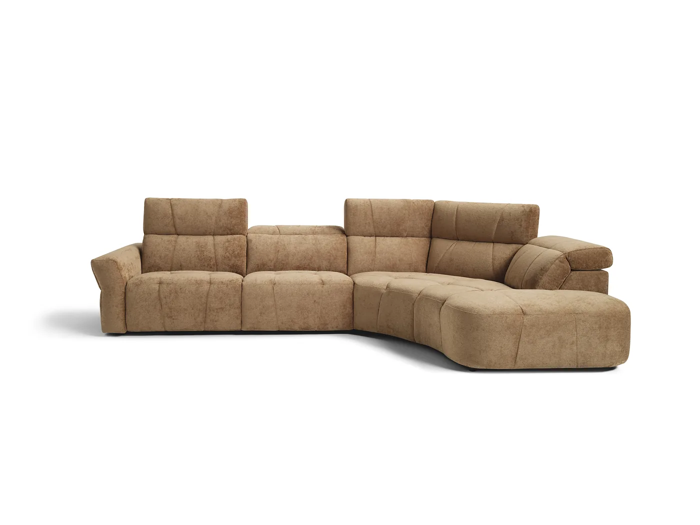
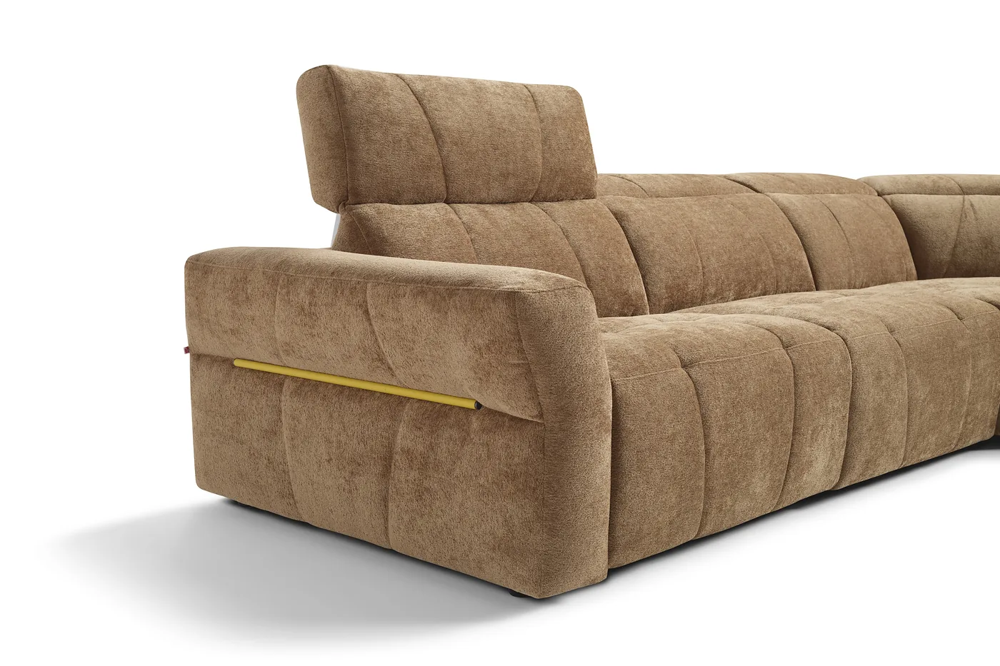
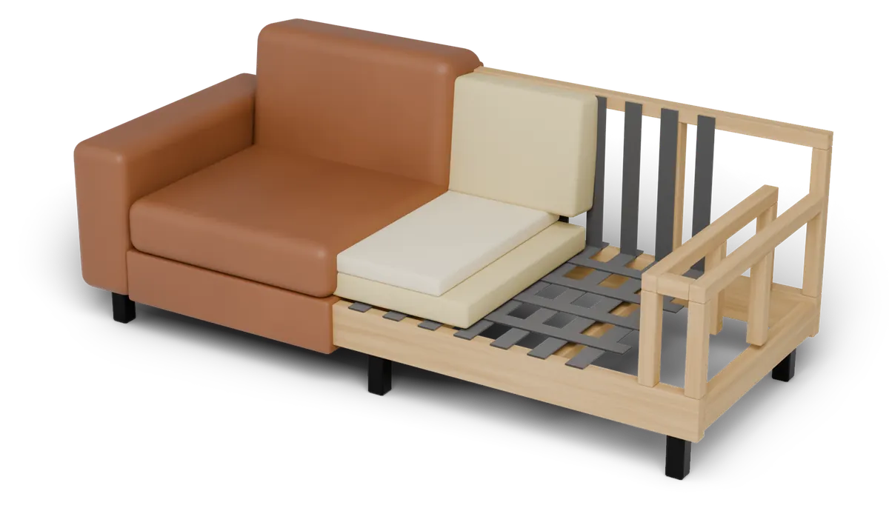

Le savoir-faire italien du confort
Max Divani
Née en 1956 à Altamura, en Italie, Max Divani fabrique des canapés et des fauteuils. Chez Fony : une sélection de salons, à dossiers avance-recule, modulables ou relax selon les modèles.
- Fabriqués en Italie
- Cuir, microfibre ou tissu
- Première visite et conseil offerts
Au magasin et sur catalogue
Notre sélection Max Divani.
-

 01
01Coffee
En cuir, en angle avec son pouf ou en deux places. Dossiers avance-recule.
Dimensions et versions de Coffee -

-



03Tata
Un grand angle arrondi, à l’assise profonde. Arrivée prévue mi-janvier 2027.
Dimensions et versions de Tata -



-

-
 06
06Curry
Trois places et deux places en tissu, avec une place relax.
Dimensions et versions de Curry


Un modèle, sous tous les angles
Zebra, l’angle qui se compose.
Le même canapé sous cinq angles : de face, de trois quarts, relax ouvert, de dessus, de côté.




-
01 · L’angle
À gauche, à droite, ou en canapé droit.
Zebra se compose en angle avec chaise longue, d’un côté ou de l’autre, ou en canapé droit de deux ou trois places.
-
02 · Les appuie-têtes
Bas pour la ligne, relevés pour la tête.
Chaque appui-tête se règle : la hauteur du canapé passe de 78 à 100 cm.
-
03 · Le relax
Une place qui s’allonge.
Avec ou sans relax électrique, commandé par boutons. L’assise se choisit en mousse standard ou ferme.
-
04 · La place
162 cm, relax ouvert.
La profondeur du canapé atteint 162 cm, relax ouvert. Apportez les mesures de votre pièce : nous vérifions avec vous.
-
05 · Le détail
Des pieds en métal, un accoudoir dessiné.
En tissu ou en cuir, avec des détails en cuir en option. Zebra est exposé au magasin ; la composition exposée change au fil des arrivages.
Dimensions et versions du Zebra
Prochainement au magasin
Tata, le grand angle arrondi.
Arrivée prévue mi-janvier 2027. En attendant, le voici sous cinq angles.



-
01 · L’angle arrondi
Une courbe à la place du coin.
Tata est un canapé d’angle de grandes dimensions : les compositions présentées par le fabricant vont jusqu’à 439 cm.
-
02 · Les appuie-têtes
De 78 à 103 cm.
Les appuie-têtes se relèvent, à la main ou électriquement selon l’élément.
-
03 · Le relax
Une place qui s’allonge.
Le relax électrique se commande par boutons. La profondeur du canapé passe de 117 à 166 cm, relax ouvert.
-
04 · L’assise
60 cm de profondeur.
Une assise profonde, sur ressorts ensachés, avec un rembourrage en mousse.
-
05 · Le détail
En cuir ou en tissu.
Avec des coutures contrastées en option. Sur commande : composition et revêtement au choix.
Dimensions et versions du Tata
La fabrication
Dans un canapé Max Divani.
Ce qu’on ne voit pas compte autant que ce qu’on voit. Touchez un repère de l’image.

1 · Le cuir
De la fleur de cuir.
Max Divani travaille la fleur, la partie noble de la peau, jamais la croûte. Nous proposons le cuir Texas, à la finition pigmentée : facile à vivre, en 24 coloris. Il se choisit au magasin, échantillons en main.
2 · Les mousses
Une assise qui reprend sa forme.
Des mousses à haute résilience, à expansion à froid : elles reviennent en place après chaque assise.
3 · La suspension
Sangles et mousse, ou ressorts ensachés.
Deux constructions existent. Des sangles élastiques croisées sous la mousse, qui donnent la souplesse. Ou une assise sur ressorts ensachés, comme sur Curry et Osaka : elle reprend mieux sa forme, et le cuir marque moins de plis avec le temps. Dans les deux cas, un relax électrique est possible selon le modèle.
4 · La structure
Du bois massif, boulonné.
La structure portante est en bois massif. Accoudoirs et dossiers sont boulonnés, ni cloués ni vissés.
Voir aussi
Les autres fabricants.
-
Nicoletti
Le relax comme un objet de design.
Voir au salon -
Les lignes arrondies
Des formes rondes, sans angle vif.
Voir au salon -
Une sélection européenne
Pour élargir les styles et les budgets.
Voir au salon
Venez essayer les salons Max Divani.
Une partie est exposée, le reste sur catalogue. De nombreuses configurations en angle, en trois ou deux places, et dans un large choix de tissus et de cuirs.
- Lundi
- 13h30 – 18h30
- Mardi au samedi
- 10h30 – 18h30
- Dimanche
- Fermé
- Téléphone
- 064 46 07 72
- Livraison
- Par nos soins, dans le Hainaut (Binche, La Louvière, Mons, Charleroi…) et la province de Namur
Pour un projet plus loin, ailleurs en Belgique ou à l’étranger : parlons-en.